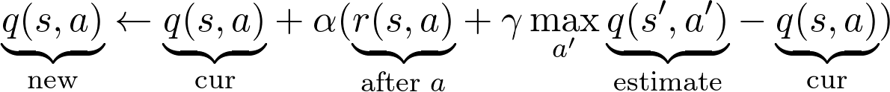

<!doctype html>
<html>
<head>
    <meta charset="utf-8">
    <meta name="viewport" content="width=device-width, initial-scale=1.0, maximum-scale=1.0, user-scalable=no">

    <title>Обучение с подкреплением для начинающих</title>

    <link rel="stylesheet" href="css/reveal.css">
    <link rel="stylesheet" href="css/theme/sky.css">

    <!-- Theme used for syntax highlighting of code -->
    <link rel="stylesheet" href="lib/css/zenburn.css">

    <!-- Printing and PDF exports -->
    <script>
        var link = document.createElement('link');
        link.rel = 'stylesheet';
        link.type = 'text/css';
        link.href = window.location.search.match(/print-pdf/gi) ? 'css/print/pdf.css' : 'css/print/paper.css';
        document.getElementsByTagName('head')[0].appendChild(link);
    </script>
    <style>
        .reveal .footer {
            position: absolute;
            bottom: 1em;
            left: 1em;
            font-size: 0.5em;
            width: 103.2%;
        }

        .column-left {
            left: -8.33%;
            text-align: left;
            float: left;
            width: 50%;
            z-index: -10;
        }

        .column-right {
            left: 31.25%;
            top: 75px;
            float: right;
            text-align: left;
            width: 50%;
            z-index: -10;
        }

        .reveal section {
            font-size: 0.8em !important;
        }

        .reveal section pre code {
            font-size: 1.1em !important;
        }
    </style>
</head>
<body>
<div class="reveal">
    <div class='footer'>
        
    </div>
    <div class="slides">

<!-------------------------------------------------------------------------------------------------->

        <section id="00.0" data-markdown="" data-background="img/00-background.png">
        </section>

<!-- this block for converting to pdf -->
<!--        <section id="00.0" data-markdown="">-->
<!--            <script type="text/template">-->
<!--                -->
<!--                <a href="https://nlinker.github.io/presentations/09_reinforcement-learning/index-ru.html">Оригинал презентации на Github</a>-->
<!--            </script>-->
<!--        </section>-->
        <section id="00.1" data-markdown="">
            <script type="text/template">
                ### Скромный слайд

                - адепт функционального программирования
                - занимаюсь разработкой программного обеспечения N лет
                - в-основном, бэкенд
                - сталкивался с разными задачами, от оконных библиотек до бигдаты
                - попутно изучил много языков программирования и инструментов
            </script>
        </section>
        <section id="01.0" data-markdown="" data-state="something">
            <script type="text/template">
                ### История

                - Шашки (1959)
                - Победа над чемпионом мира в нарды (1992)
                - Управление вертолётом (2008)
                - Обучение робота ходьбе, Robocup Soccer
                - Игры ATARI (2014)
                - AlphaGo (2016)
                - AlphaZero, AlphaStar, OpenAI Five
            </script>
        </section>
        <section id="01.1" data-markdown="">
            <script type="text/template">
                ### Примеры использования, 1
                [Learning to Swing-Up and Balance from Scratch](https://youtu.be/Lt-KLtkDlh8)

                <video height="400" width="800" controls="" data-autoplay="" src="img/01-cartpole-edited.mp4"></video>
            </script>
        </section>
        <section id="01.2" data-markdown="">
            <script type="text/template">
                ### Примеры использования, 2
                [Робот, бросающий вещи](https://tossingbot.cs.princeton.edu/)

                
            </script>
        </section>
        <section id="01.3" data-markdown="">
            <script type="text/template">
                ### Примеры использования, 3

                [TossingBot: Learning to Throw Arbitrary Objects](https://youtu.be/f5Zn2Up2RjQ)
                <video height="400" width="800" controls="" data-autoplay="" src="img/01-tossingbot-10k.mp4"></video>
            </script>
        </section>
        <section id="01.4" data-markdown="">
            <script type="text/template">
                ### Примеры использования, 4

                [Atari - Solving Games with AI](https://towardsdatascience.com/atari-reinforcement-learning-in-depth-part-1-ddqn-ceaa762a546f)

                
                
            </script>
        </section>
        <section id="01.5" data-markdown="">
            <script type="text/template">
                ### Примеры использования, 5

                [OpenAI Gym github](https://github.com/openai/gym)

                
            </script>
        </section>

        <section id="02.1" data-markdown="">
            <script type="text/template">
                ### Основные элементы RL, 1
                <div class="column-left">
                    
                </div>
                <div class="column-right">
                    <ul>
                        <li>Агент (agent)</li>
                        <li>Среда (environment)</li>
                        <li>Вознаграждение (reward)</li>
                        <li>Стратегия (policy)</li>
                        <li>Функция ценности (value function)</li>
                        <li>Функцией ценности действия (action-value function)</li>
                        <li>Модель среды (model)</li>
                    </ul>
                </div>
            </script>
        </section>
        <section id="02.2" data-markdown="">
            <script type="text/template">
                ### Основные элементы RL, 2

                Немного формул, (картинка на следующем слайде)

                <p align="left">
                    `γ` - параметр обесценивания, `γ` ∈ [0, 1]<br/>
                    <br/>
                    <br/>
                    <br/>
                    <br/>
                </p>
            </script>
        </section>
        <section id="02.3" data-markdown="">
            <script type="text/template">
                ### Основные элементы RL, 3
                <div class="column-left">
                    
                </div>
                <div class="column-right">
                    <p>Стратегия показывает куда идти из клетки.</p>
                    <p>`v(s)` - ожидаемый выигрыш, если мы находимся в клетке,</p>
                    <p>Вознаграждение в жёлтой клетке `+1.0`, в красных `-1.0`, в остальных `0`.</p>
                    <p>`q(s,a)` не отображена</p>
                </div>
            </script>
        </section>
        <section id="02.4" data-markdown="">
            <script type="text/template">
                ### Основные элементы RL, 4

                Очевидно, нам нужно найти наилучшую стратегию!
                
            </script>
        </section>
        <section id="02.5" data-markdown="">
            <script type="text/template">
                ### Основные элементы RL, 5
                <div class="column-left">
                    
                </div>
                <div class="column-right">
                    <p>Зная оптимальную `Q(s,a)` мы можем найти оптимальную стратегию</p>
                    <p></p>
                    <p>Но по оптимальной `V(s)` мы вообще говоря не можем это сделать</p>
                </div>
            </script>
        </section>

        <section id="03" data-markdown="">
            <script type="text/template">
                ### Exploration vs Exploitation

                Дилемма: использовать известные возможности как можно лучше или пробовать новые? ([Pic source](https://www.deviantart.com/drkhorn/art/Azure-dragon-509209905))

                
            </script>
        </section>

        <section id="04.1" data-markdown="">
            <script type="text/template">
                ### Марковский процесс, MDP, 1

                - Множество задач может быть поставлено как MDP.
                - Выигрыш зависит только от текущего состояния и дальнейших действий.
                - Цепь Маркова с вознаграждениями за переходы.

                <video height="300" controls loop data-autoplay src="img/04-markov-chain.mp4"></video>
            </script>
        </section>
        <section id="04.2" data-markdown="">
            <script type="text/template">
                ### Марковский процесс, MDP, 2

                - Методы решения: Value Iteration, Policy Iteration, SARSA
                - Предполагается знание вероятностной модели
                - Уравнение Беллмана (= dynamic programming)

                
            </script>
        </section>
        <section id="04.3" data-markdown="">
            <script type="text/template">
                ### Value iteration, demo

                Процесс итеративно обновляет значения `v(s)`

                <video height="400" controls loop data-autoplay src="img/04-value-iteration-demo.mp4"></video>
            </script>
        </section>


        <section id="05.1" data-markdown="">
            <script type="text/template">
                ### Q-learning, 1

                - Что если модель построить невозможно?
                - Снова взглянем на уравнением Беллмана
                - Мы можем вычислить максимальное будущее вознаграждение как `r` + `γ`&times;максимальное будущее вознаграждение в следующем состоянии `s'`

                

                запомним эту мысль
            </script>
        </section>
        <section id="05.2" data-markdown="" data-transition="none">
            <script type="text/template">
                ### Q-learning, 2

                - Таким образом мы можем итеративно обновлять `q`-функцию аппроксимируя `q_*`
                - Как будто вытягиваем себя за волосы :-)
                - `α` - ещё один гиперпараметр, `α ∈ [0, 1]`
                - Есть теоремы о сходимости

                
            </script>
        </section>
        <section id="05.3" data-markdown="" data-transition="none">
            <script type="text/template">
                ### Q-learning, 3

                - Таким образом мы можем итеративно обновлять `q`-функцию аппроксимируя `q_*`
                - Как будто вытягиваем себя за волосы :-)
                - `α` - ещё один гиперпараметр, `α ∈ [0, 1]`
                - Есть теоремы о сходимости

                
            </script>
        </section>
        <section id="05.4" data-markdown="" data-transition="none">
            <script type="text/template">
                ### Q-learning, 4

                ```python
                # Предварительно генерируем N эпизодов
                Q = defaultdict(lambda: np.zeros(env.action_space.n))
                policy = make_epsilon_greedy_policy(Q, epsilon, env.action_space.n)
                for i_episode in range(num_episodes):
                    state = env.reset()
                    for t in itertools.count():
                        action_probs = policy(state)
                        action = np.random.choice(np.arange(len(action_probs)), p=action_probs)
                        next_state, reward, done, _ = env.step(action)

                        best_next_action = np.argmax(Q[next_state])
                        td_target = reward + gamma * Q[next_state][best_next_action]
                        td_delta = td_target - Q[state][action]
                        Q[state][action] += alpha * td_delta
                        if done:
                            break
                        state = next_state
                return Q, stats
                ```
            </script>
        </section>

        <section id="06.1" data-markdown="">
            <script type="text/template">
                ### Deep Q-learning, 1

                - Простая мысль: а давайте будем приближать Q-функцию нейронной сетью?

                
            </script>
        </section>
        <section id="06.2" data-markdown="">
            <script type="text/template">
                ### Многие пытались

                - Данные последовательные, паразитная корреляция
                - Стратегия сильно скачет от малых изменений `Q`
                - Стратегия может осциллировать
                - Агента бросает в экстремальные случаи
                - Масштаб значений `Q` и `R` неизвестен
                - Нестабильное обратное распространение ошибки
            </script>
        </section>
        <section id="06.3" data-markdown="">
            <script type="text/template">
                ### Deepmind сделали так

                1. Experience replay, циклический массив троек `(s4, a, r)`
                2. Ввели 2 одинаковые нейронные сети
                    - Prediction, которая учится на каждом минибатче
                    - Target, которая обновляется из Prediction каждые 10к шагов
                3. Обрезание весов до `[-1, 1]`, и...

                ----
                - Experience replay: сэмплинг разрушает корреляцию
                - Experience replay: учится на новых стратегиях
                - Freeze target-NN: более стабильные стратегии и агент
                - Clipping: Значения `Q` и `R` теперь нормальные, backprop ok
            </script>
        </section>
        <section id="06.4" data-markdown="">
            <script type="text/template">
                ### Deep Q-Learning

                ```python
                nn.Conv2d(3, 16, kernel_size=5, stride=2)
                nn.BatchNorm2d(16)  # relu
                nn.Conv2d(16, 32, kernel_size=5, stride=2)
                nn.BatchNorm2d(32)  # relu
                nn.Conv2d(32, 32, kernel_size=5, stride=2)
                nn.BatchNorm2d(32)  # relu
                # loss = MSE
                ```
                
            </script>
        </section>
        <section id="06.5" data-markdown="">
            <script type="text/template">
                ### Deep Q-Learning

                - Можно распарралелить ([source](https://youtu.be/Aut32pR5PQA))!

                <video height="400" controls loop data-autoplay src="img/06-dqn-cars.mp4"></video>
            </script>
        </section>

        <section id="07" data-markdown="">
            <script type="text/template">
                ### Результаты

                - [Опубликованы командой Deepmind](https://web.stanford.edu/class/psych209/Readings/MnihEtAlHassibis15NatureControlDeepRL.pdf)

                
            </script>
        </section>

        <section id="08" data-markdown="">
            <script type="text/template">
                ### Спасибо за внимание

                
            </script>
        </section>

<!-------------------------------------------------------------------------------------------------->

    </div>
</div>

<script src="lib/js/head.min.js"></script>
<script src="js/reveal.js"></script>

<script>
    // More info about config & dependencies:
    // - https://github.com/hakimel/reveal.js#configuration
    // - https://github.com/hakimel/reveal.js#dependencies
    Reveal.initialize({
        dependencies: [
            {src: 'plugin/markdown/marked.js'},
            {src: 'plugin/markdown/markdown.js'},
            {src: 'plugin/notes/notes.js', async: true},
            {
                src: 'plugin/highlight/highlight.js',
                async: true,
                callback: function () { hljs.initHighlightingOnLoad(); }
            }
        ]
    });
    
</script>
</body>
</html>
